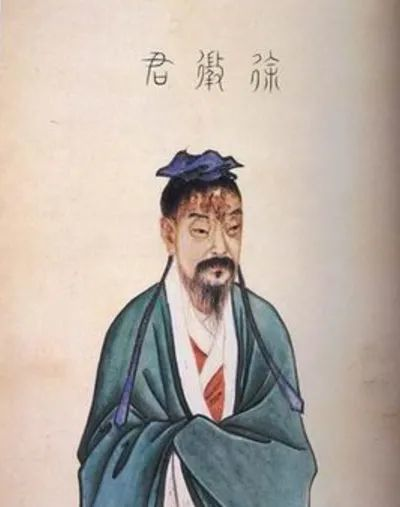
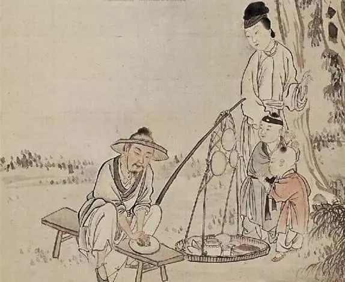
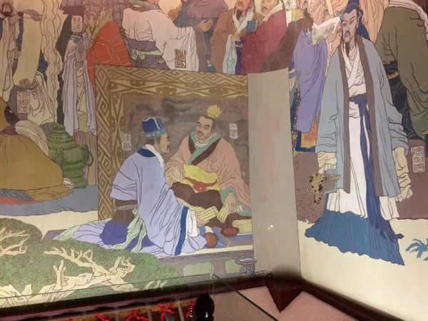

徐孺子（97-169），姓徐名稺，字孺子，东汉豫章郡（南昌）人。徐孺子学识渊博，对经学、哲学、天文、算数、历法有深入研究。他亦是道德楷模，品行如玉、重情重义、恭俭谦逊、淡泊宁静，被尊称为南州高士和布衣学者。

▲徐孺子勤学苦读 满腹经纶
徐孺子出生在世代儒士家庭。由于当时社会动荡不宁，徐家被迫多次迁徙，家境日益贫困，唯有力耕维生，这也培育出徐孺子不耕不食的良好品质。在家庭的熏陶下，徐孺子从小就对学习知识非常用功，加上天生聪慧、记忆过人，9岁时就能背诵《春秋经》《公羊义例》等一些著作，并展现出不同常人的辩证思维。《世说新语》记载：徐孺子九岁时，有一次在月光下和伙伴们玩耍，有人对他说：“如果月亮里面什么也没有，那岂不是会更加明亮呢？”徐孺子答：“不，就好比人的眼睛里有瞳孔，如果没有瞳孔那一定看不清。”
十五岁时，徐孺子慕名前往槠山（今江西丰城）拜大学者唐檀为师求学。在唐檀的悉心教诲下，徐孺子开始系统学习《颜氏春秋》《京氏易》等著作，同时兼修风角、星宿、算历、河图、七纬、推步、变易等，这些都是当时汉朝最高学府太学的必修科目。徐孺子在槠山读书的地方，被后人称为徐孺子读书台。清朝的唐光游览读书台后写道：“远览近瞩，层峦环拱，匹练夹飞，幽花细草，娟娟宜人，实为佳境”。
经唐檀的推荐及层层选拔，徐孺子二十岁时来到洛阳入太学深造，成为了一名诸生。东汉时期太学的教师称博士，太学的学生称“诸生”或“太学生”。期间，徐孺子接触到了许多优秀的学者与诸生，先后从师于樊英、黄琼等大儒，也与陈蕃、郭泰等同学建立了深厚的友谊。樊英是当时著名的易学家和术学家，黄琼为人正直、品行高尚，后历任司空、太仆、司徒、太尉等职。徐孺子入太学后，自身学问、德行有了显著提升，慢慢成长为一个饱学之士。不仅对儒家学说的经典之作烂熟于胸，融会贯通，而且对其他各学也驾轻就熟，通晓天文地理、星算河图，了解气象知识，掌握日月星辰运行规律等。

▲徐稚磨镜图看破乱局 坚执不仕
汉代设立太学的目的是求贤养士，为朝廷培养人才，并以此作为教化天下、提高吏治水平的基础。诸生们毕业后，大部分选择走“学而优则仕”道路，任官为吏。但也有少数选择授徒讲学而为师，徐孺子就是其中的一位。
徐孺子做出这样选择，与当时东汉政治乱局有很大关系。东汉初期，光武帝、明帝、章帝时政治较为清明，社会经济较为安定。但章帝之后从和帝起，每位皇帝都是儿时即位，掌控不了时局，导致外戚、宦官势力开始膨胀，各自结成利益集团并互相争斗、彼长此消，一大批忠臣志士被打压、甚至杀戮，政治日益黑暗，同时中央对地方的控制逐渐衰弱，造成土地兼并问题日益恶化、豪强割据严重，加上天灾与瘟疫的双重打击，民不聊生，于是纷纷起来造反，东汉逐渐走向灭亡。乱局之风逐渐吹到了当时的太学，到汉安帝时，太学“博士倚席不讲，朋徒相视怠散，学舍颓敝，鞠为园蔬，牧儿荛竖，至于薪刈其下”。对这些乱象，徐孺子看在眼里、痛在心里。加上，徐孺子生性淡泊名利，对做官兴趣本来就不大，他清醒认识到，在这种乱局中，自己做不到随波逐流、同流合污，也没有必要去作无谓抗争，弄不好就有生命危险，还不如学习自己的良师樊英远离政治，回家潜心传道授业，正如他日后所说的“大树将颠，非一绳所维，何为栖栖不遑宁处？”
徐孺子的担心是有道理的，其好友陈蕃就印证了他的“大树将颠，非一绳所维”的先见之明。陈蕃，东汉名臣，字仲举，汝南平舆人（今河南汝南县人）。“扫天下何须扫一屋”的典故就来源于他。十五岁时，陈蕃自己住的房子里一片狼藉，从来没有清理过，理由是：大丈夫在世，应当以扫除天下为最重要的事，怎么可以只关心一间房子呢？陈蕃从政之后，始终都处在宫廷争斗时的动荡之中，要么与专权的外戚争锋，要么和弄事的宦官相抗，期间还多次被贬。最可惜的是，当他以古稀之年与外戚、大将军窦武共谋扫除为患于朝的宦官势力，由于事败反为所害。
此后，徐孺子曾“四察孝廉、五辟宰府、三举茂才”，“四察孝廉”，是指他四次被察举为孝廉（“举孝廉”是汉朝取仕制度，凡是被察举为孝廉的，朝廷将予以重用）；“五辟宰府”，是指他五次回避、谢绝朝廷的征聘；“三举茂才”，是指三次被举荐为“茂才”即秀才，当时为了规避汉光武帝刘秀的名字，将秀才改为茂才。后来，他还一次被“请署功曹”，一次被“举有道”，一次“家拜太原太守”，两次被皇帝以安车、玄勋、蒲轮等极其隆重的礼节征用，徐孺子都不为所动，一律谢绝，坚持自己选定的人生道路。
▲徐

孺下陈藩之榻品行如玉 人杰地灵
从太学回来后，徐孺子开始了与世无争的隐士生活，他常自耕稼，非其力不食，传业授道、讲学授徒，恭廉表率、教化乡里，成为当时一座道德标杆。在徐孺子的潜移默化下，当地乡风日益淳朴，以致有失物者，悬以相还，道无拾遗。其子徐季登与其如出一辙，行为敦厚、孝顺父母、友爱兄弟、隐而不仕，当时的豫章太守华歆想请他相见，一直称病不去。徐孺子及后人这种高尚品质甚至得到了当时参与农民起义人们的敬佩，敬其为高士，相约敕不犯其闾。豫章百姓见此情景，纷纷在自家门上挂悬牌匾，上书“孺子故地”“泅水子遗”“徐氏故里”等，以示与徐孺子沾亲带故，以保平安。
徐孺子对功名利禄看得淡如浮云，从不趋炎攀附，就算自己的良师与友人当大官也不例外，尽量与他们保持一定距离。同时，他非常重情重义，常怀感恩之心，当别人遇到困难时会力尽所能给予帮助；每逢良师或友人逝世，总是不辞辛苦、亲往悼念。《海内先贤形状》评价说：徐孺子“征聘未尝出门，奔丧不远万里”。就如自己的良师黄琼进入官场，后官至三司，炙手可热；但徐孺子却因此与他断了来往，谓“道不同不相与谋”。但得知黄琼谢世后，徐孺子不远千里、前往悼念，以报知遇之恩。谢承《后汉书》生动记载：“前后为诸公所辟，虽不就，及其死，万里赴丧。尝预炙鸡一只，以棉渍酒中，曝干，以裹鸡。径到所赴冢隧外，以水渍棉，使有酒气。斗米饭，白茅为藉，以酒置前。酹酒毕，留谒即去，不见丧主。”在得知先师唐檀身染沉疴、卧床不起，徐孺子多次前往看望问候。唐檀病故后，徐孺子亲自操办其丧事，哭葬尽哀。每逢清明时节，徐孺子都会去唐檀墓地祭扫。对于唐檀的后人，徐孺子也总是每每接济，尽力照顾。
徐孺子品行如玉、学识渊博，深得黄琼、陈蕃等人欣赏，他们多次向朝廷举荐，希望徐孺子能与他们一道匡扶汉室，成就一番事业。有一次，汉桓帝刘志问陈蕃：“徐稚、姜肱、韦著孰为先后”，陈蕃答：“肱生于公族，闻道渐训；著长于三辅礼仪之俗，所谓不扶自直，不镂自雕；至于稚者，来自江南鄙薄之域，而角立杰出，宜当为先。”通过当时名士之间对比，更加生动地表明了徐孺子当时的声望和地位。陈蕃任豫章郡太守时，按照礼节请求徐孺子出任功曹一职，徐孺子无法直接拒绝，只好先去拜见后再推辞回家。为表示对徐孺子的求贤若渴，陈蕃在家专设一塌，孺子来时才打开，走后即收起。自古以来，有贤人很多，求贤人亦不在少数，但像陈蕃设专榻之举实属罕见。以致唐初四杰之首王勃在举世闻名的《滕王阁序》中大加感叹：“人杰地灵，徐孺下陈蕃之榻。”需要强调的是，赞江西人杰地灵，仅举此一例。
淡泊宁静 趋于至善
观徐孺子一生，他虽未做出一件惊天动地的大事，也未留下一篇世代相传的宏文，所作所为显得那么平常，但他勤学苦读、完善自我、道德至上的精神是清雅高尚的，特别是在当时非仕即农的社会中，更是显得与众不同、鹤立鸡群。唐代诗人张九龄在任洪州刺史时，曾写下《后汉征君徐君碣铭》：“先生经修于世，纯俭以存戒，博爱以体仁，应物以会通，全己以归正，汉廷所以宗其德，天下所以服其行，岂与彼数子直逆庭而已哉？”北宋散文家曾巩在瞻仰徐孺子祠堂之后，不禁发出感慨：“汉至今且千岁，富贵堙灭者不可称数。孺子不出闾巷，独称思至今。”两人的字里行间，均对徐孺子充满了敬意与虔诚。
汉灵帝建宁二年（169），徐孺子病故，享年72岁。为纪念和弘扬徐孺子，从三国、晋代开始，历代都对徐墓进行修缮维护，并建造亭台、祠堂等设施。张九龄、杜甫、曾巩、苏辙、黄庭坚、杨万里、朱熹、刘克庄、文天祥、赵孟頫、解缙、袁枚等文化名人，也先后慕名来南昌凭吊吟咏，并留下了许多感人诗句。其中，朱熹写到：“孺子高风何处寻，东湖台观水云深。生刍一束人如玉，此日清凉万古心。”明代万历年间，江西提学副使朱廷益模仿山东曲阜“祭孔”之例，在江西创立公祀徐孺子的“祭徐”制度，并一直延续到清初。当今，南昌市的孺子路、孺子亭公园、孺子亭、高(士)桥、孺子亭小学等均是以徐孺子命名的。其中，孺子亭位于南昌市西湖区的孺子亭公园，为重檐六角攒尖式，周边绿化景观布局富有文化底蕴，较好地再现了“豫章十景”中“徐亭柳烟”景观。
为研究和宣传徐孺子，弘扬中华传统美德与孺子精神，南昌成立了徐孺子研究会。1997年，南昌隆重开展了纪念徐孺子诞生1900周年系列活动，时任全国人大常委会副委员长费孝通题书“中华人杰徐孺子”，范徐丽泰、陈香梅、徐国炯等海内外知名人士纷纷发表高度评价孺子精神的纪念文章。时至今日，弘扬孺子精神仍有很强的现实意义。进入新时代，人们思想活动的差异性、选择性、多样性不断增强，价值取向、道德观念复杂多变，我们要努力引导人们坚持社会主义核心价值观，把提升个人德行和人格完美作为人生的目标，行胜于言，趋于至善，让孺子精神绽放出新的风采。